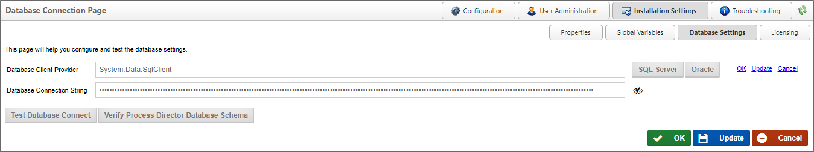

Database Settings
The Database Settings page allows you to set the database connection string and database client provider. Once you have entered your connection strings, ensure that you saved your settings. You may also test the connection by clicking the Test Database Connect button. This will return a valid statement or return an error. The Verify Process Director Database Schema button will run a test on the database to ensure that the data schema for the Process Director database you've selected is compatible with the version of Process Director you have installed.
For Process Director v6.0.100 and higher, the header text, Database Connection Page, has been changed to Database Settings, to match the page name specified on the navigation button.

 As a security enhancement to Process Director v6.0 and higher, passwords in connection strings and password fields are obfuscated by default, and will not display unless the "Eye" icon adjacent to the field is clicked, which will show the password in clear text.
As a security enhancement to Process Director v6.0 and higher, passwords in connection strings and password fields are obfuscated by default, and will not display unless the "Eye" icon adjacent to the field is clicked, which will show the password in clear text.